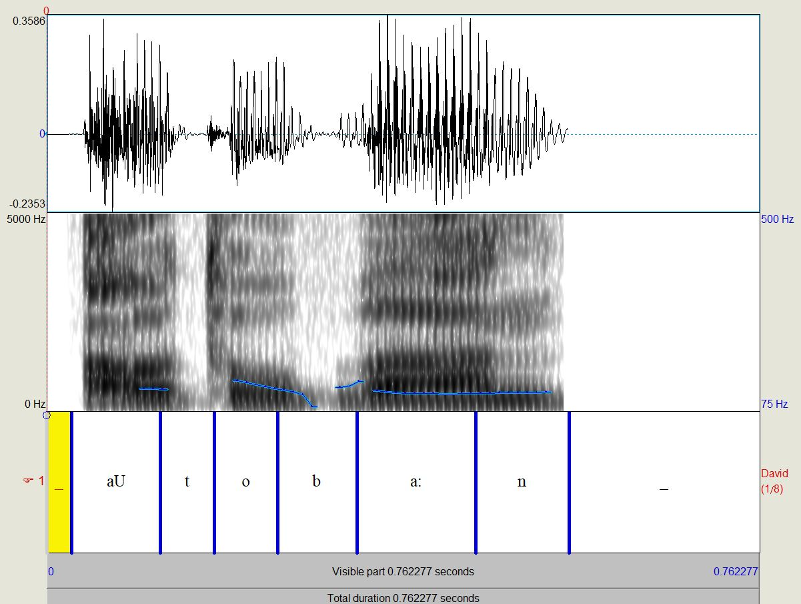
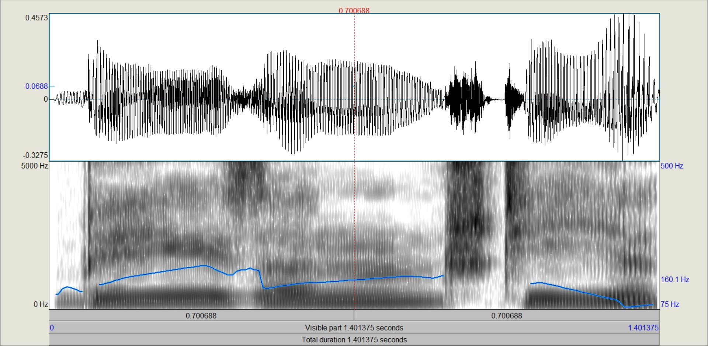

| Aufnahme David Eichhorn Autobahn | Synthese David Eichhorn Autobahn |
|---|---|
|  | |
| Transkriptionstabelle Autobahn | pho File Autobahn |
| Aufnahme Stefan Jessel Besenstiel | Synthese Stefan Jessel Besenstiel |
|---|---|
|
|
 |
| Transkriptionstabelle Besenstiel | pho File Besenstiel |
| Aufnahme Marc Ubbelohde | Synthese Marc Ubbelohde |
|---|---|
| Transkriptionstabelle Astronaut | pho File Astronatu |
Alle lauten waren im Sprachfile vorhanden, die die Transkription erwarten ließ. Die Synthese klingt etwas mehr mechanisch. Das Spektrum hat sich ein wenig verändert, sowie der pitch. Das [a:] am ende musste wesentlich länger gemacht werden als erwartet damit die synthse nicht absolut falsch klingt.
| Aufnahme Marc Ubbelohde Was ist ein Satz? | Synthese Marc Ubbelohde Was ist ein Satz? |
|---|---|

|

|
| Transkriptionstabelle Was ist ein Satz? | pho File Was ist ein Satz? |